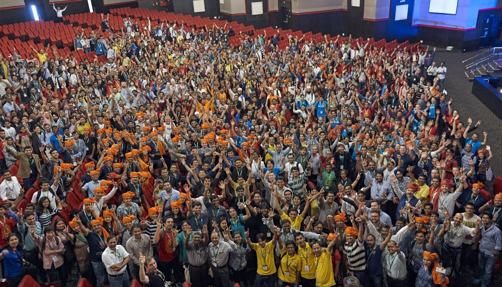

Enter a number to see an image representing a crowd size closest to your input:
The Story Behind VisualizeCrowds.com?
Hi, I'm Eric Otten, and I created this site for business owners and anyone navigating social media. I've worked with many entrepreneurs who feel discouraged by what they perceive as "small" numbers of likes, followers, or views. For example, someone might say, "Aw, my Instagram Reel only got 100 likes," without realizing how significant 100 people actually is. This site is designed to help visualize those numbers and put the impact they're making into real-world perspective.
If you find this helpful, consider joining my completely free newsletter, where I share social media strategies and online business insights with over 1,000 other subscribers. Here's what that looks like:
Just enter your email below. We have a strict no-spam policy!
Free advice to build your audience.